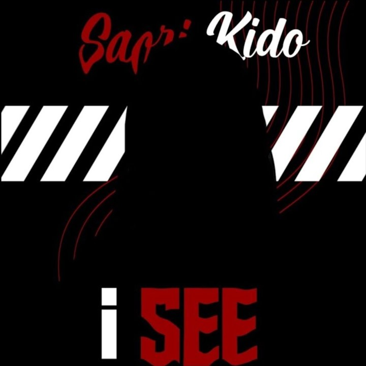
2022 / single
I SEE
Single de estreia que marca o início oficial da carreira musical de Saori Kido. Representa sua transição para a indústria e estabelece sua identidade artística inicial.
Discography
Conheça os lançamentos de Saori Kido organizados por fases.

2022 / single
Single de estreia que marca o início oficial da carreira musical de Saori Kido. Representa sua transição para a indústria e estabelece sua identidade artística inicial.
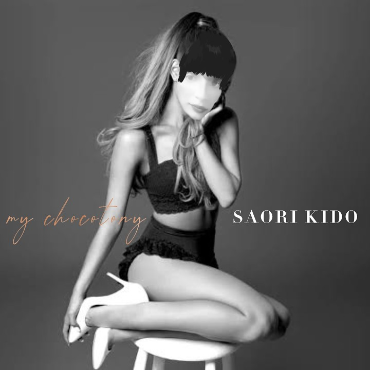
2023 / mini album
Primeiro mini álbum de Saori, lançado após seu debut. O projeto expandiu sua imagem artística e consolidou sua presença na indústria com novas sonoridades.

2023 / group album
Álbum de estreia do grupo CHOCOGIRLS, marcando a entrada de Saori no projeto coletivo. Apresenta a construção do universo do grupo e sua identidade musical.
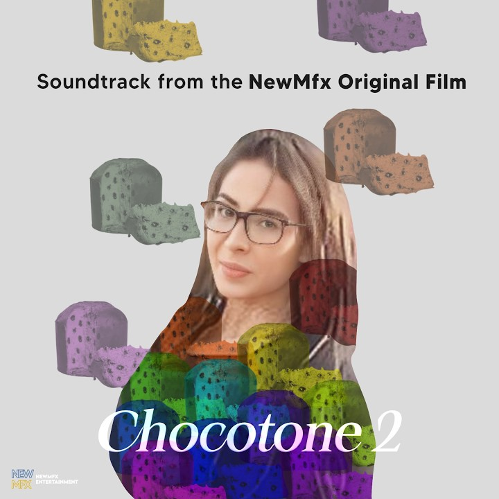
2023 / single
Single especial no estilo OST, ligado ao universo do filme Chocotone 2. Destaca a versatilidade de Saori ao conectar música e narrativa audiovisual.
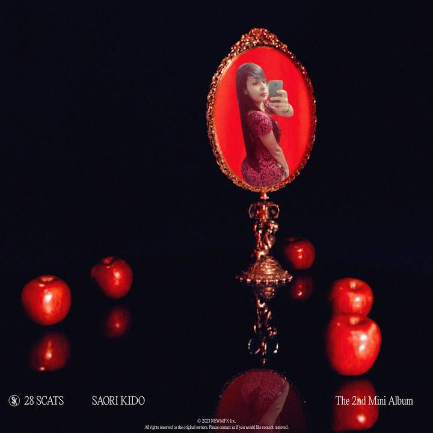
2023 / mini album
Segundo mini álbum de Saori, trazendo uma evolução em sua sonoridade e conceito. O projeto amplia sua escala como artista solo e reforça sua consistência.
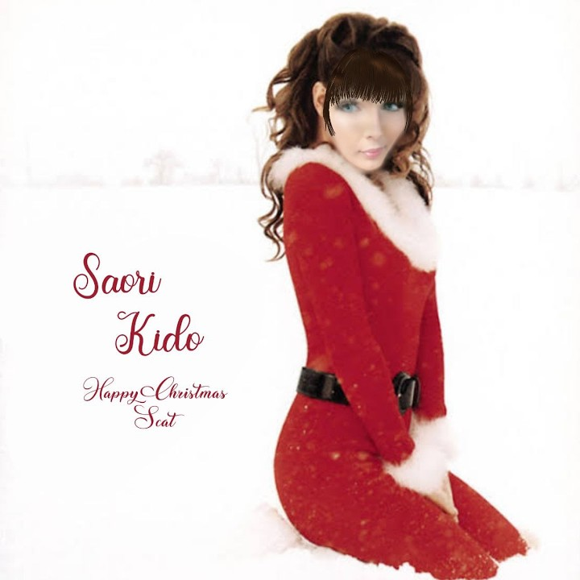
2023 / single
Lançamento especial de fim de ano que mantém a tradição natalina da artista. Apresenta uma proposta mais leve e temática dentro de sua discografia.
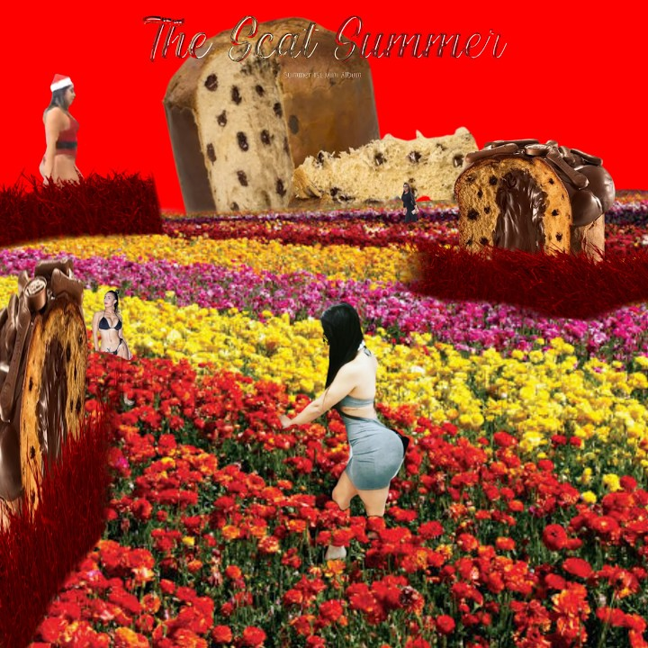
2024 / mini album
Mini álbum com temática de verão, trazendo uma estética mais leve e vibrante. O projeto marca uma nova fase mais descontraída na carreira de Saori.

2024 / group album
Segundo capítulo do projeto NewMfx Festival com as CHOCOGIRLS. Expande o universo do grupo e fortalece sua presença na indústria musical.
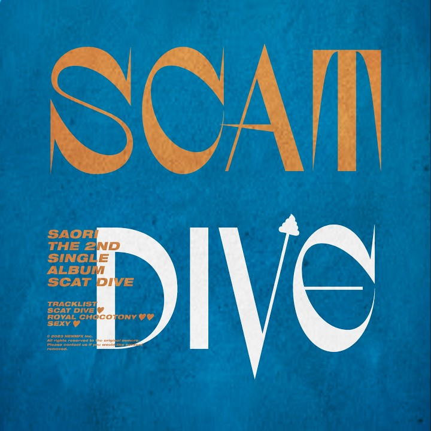
2024 / single
Single álbum com quatro faixas que marca mais um retorno estratégico de Saori. O projeto mantém sua presença ativa entre grandes lançamentos.
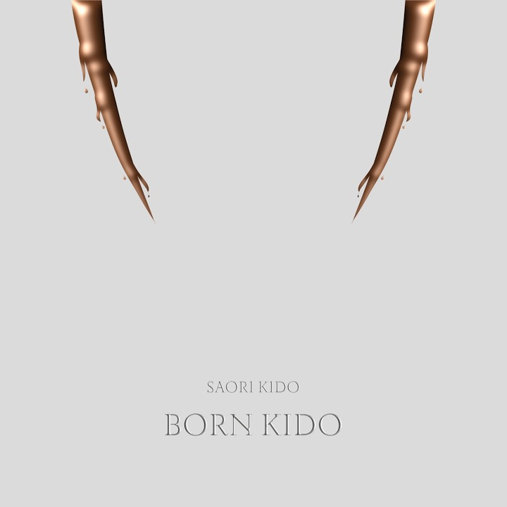
2024 / album
Primeiro álbum completo de Saori e um grande marco em sua carreira. O projeto elevou seu nível artístico e consolidou seu sucesso global.

2024 / group album
Projeto grandioso das CHOCOGIRLS que se tornou um dos maiores sucessos do grupo. Destaca a expansão do conceito e impacto coletivo.
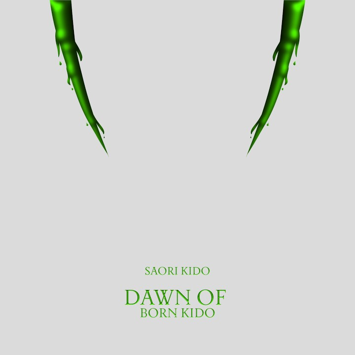
2024 / remix album
Álbum de remixes que revisita a era Born Kido com novas versões e faixas inéditas. Reforça a capacidade de reinvenção da artista.
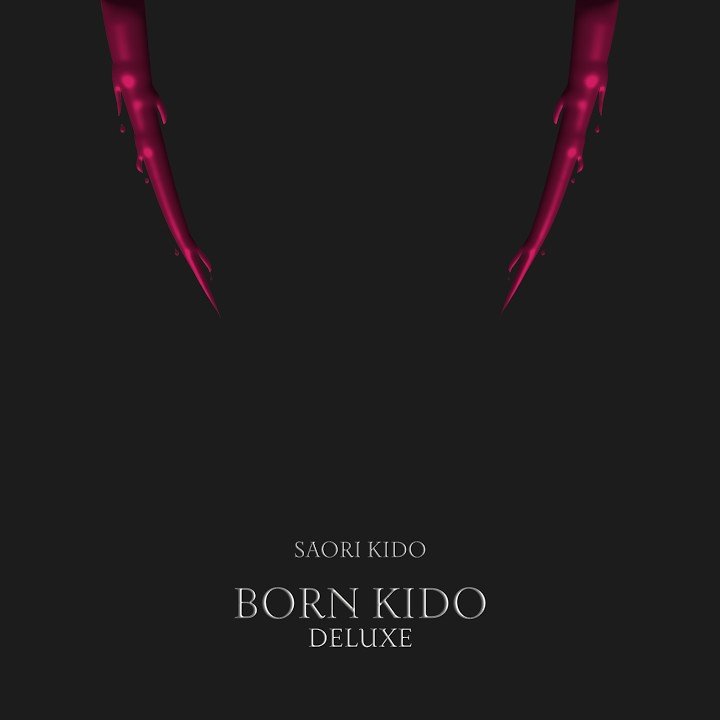
2024 / deluxe album
Versão expandida do álbum com novas faixas e maior profundidade conceitual. Representa o auge da era Born Kido.
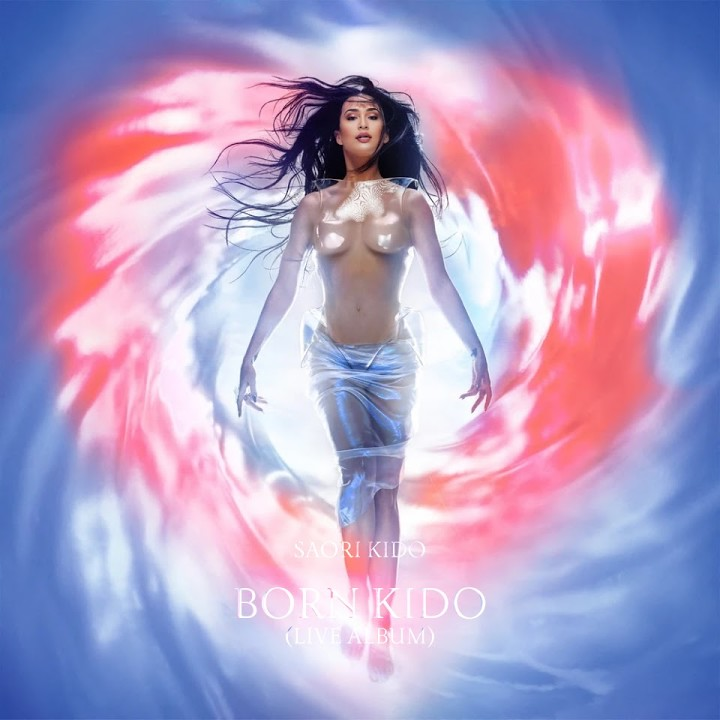
2024 / live album
Álbum ao vivo que captura a energia da turnê mundial. Mostra a conexão emocional de Saori com o público em grande escala.
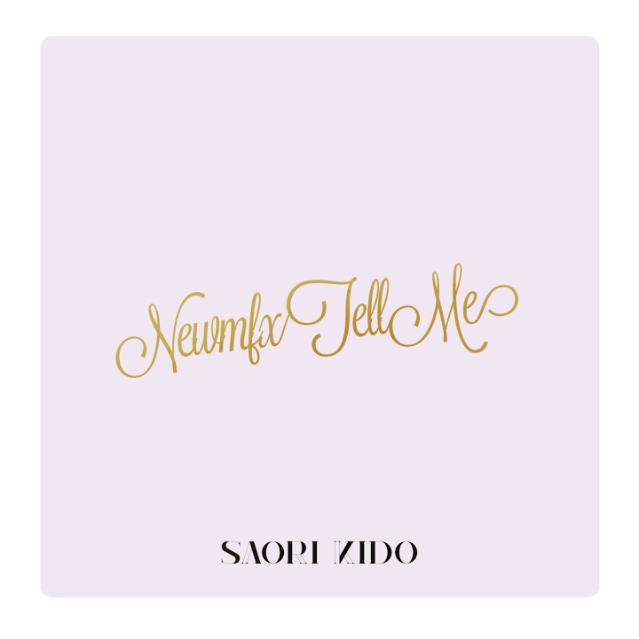
2024 / single
Single de fim de ano que encerra o intenso ciclo de lançamentos de 2024. Mantém a tradição natalina da artista com uma nova proposta.
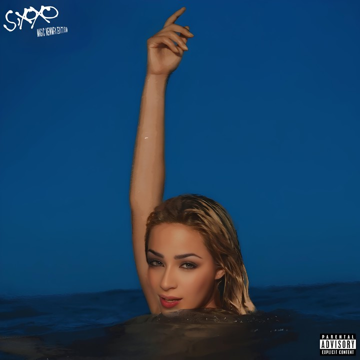
2025 / mini album
Versão deluxe do mini álbum que amplia seu conceito e impacto. O projeto reforça a maturidade artística de Saori.
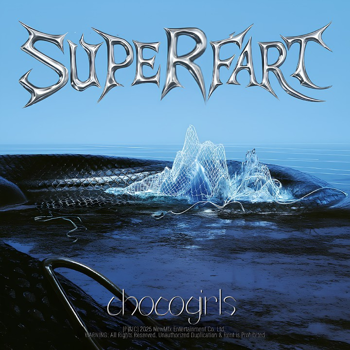
2025 / group repackage
Repackage das CHOCOGIRLS que encerra o ciclo do projeto Festival. Expande a proposta original com novas faixas e conceitos.